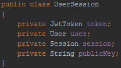
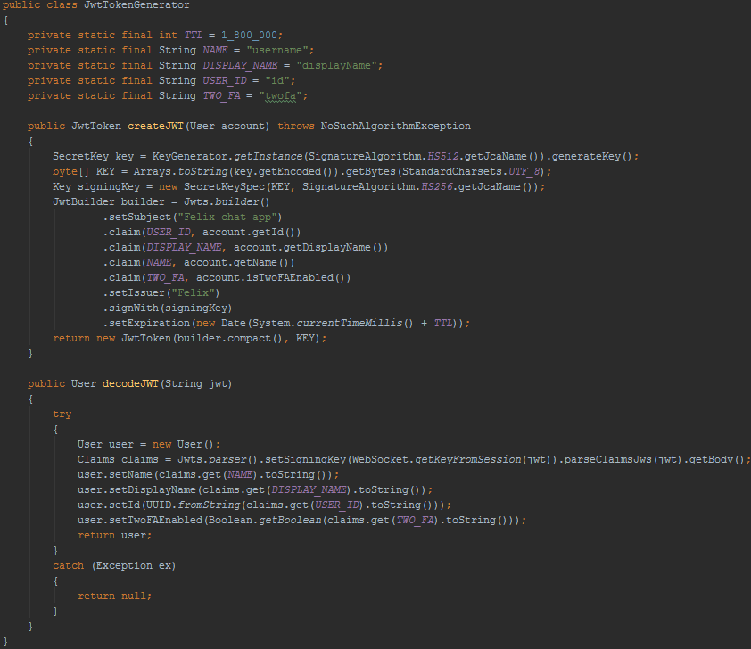

Felix chat app
Deze pagina beschrijft de uitwerking, implementatie en keuzes van de chat application Felix. Het concept hiervan is te zien op de deze pagina. In deze applicatie komen meerdere security aspecten aan bod die beschreven staan in mijn leerplan. De gedetailleerde uitwerking met gemaakte keuzes, onderbouwing en technische details zoals code snippets staan op deze pagina vermeldt. Mijn project staat op Git waar ik ook de code voor dit portfolio heb staan.
De benodigde applicaties voor het concept zijn:
De client is in Java geschreven en voor de gebruiker die deze op zijn computer kan installeren. De gebruiker moet een licentie hebben om de applicatie te kunnen installeren en activeren.
De server is in Java spring geschreven en is niet voor de gebruiker zelf toegangkelijk. De server wordt gebruikt door de chat client.
De database is een postgress image die opgestart kan worden als een Docker machine die gebruikt wordt door de server.
De security van de applicatie is opgedeeld onder de volgende onderdelen:
2.1 Encryptie
Ik wil in mijn applicatie een mix van RSA en AES gebruiken om de versleuteling van de client naar de server te regelen. RSA is een vrij traag algoritme en is daarom niet geschikt voor het versleutelen van grote berichten, de chats versleutelen met RSA is dan ook geen geschikte optie. AES daarentegen is veel sneller en daarom wel geschikt om grote berichten te versleutelen. Ik ga RSA alleen gebruiken om de sleutel voor de AES encryptie versleuteld te delen tussen de client en server.
2.2 Autorisatie
Voor de authorisatie krijgt de gebruiker na het succesvol inloggen een JWT-token. Hierin kan informatie opgeslagen worden zoals de username, displayname, id en of deze 2FA geactiveerd heeft, waarmee de client zich kan identificeren. Deze tokens worden uitgedeeld aan de client's door de server, maar worden ook in server zelf bijghouden met de bijhordende key en websocket sessie.
Afbeelding 1 Usersessie informatie
Elke sessie heeft een eigen JWT-tokensleutel die bij iedere request van de client ververst wordt, waardoor de JWT-tokensleutel maar een korte tijd in omloop blijft. Als er gerommeld is met deze token dan zal de server deze niet meer kunnen verifiëren en wordt de token ongeldig verklaard met als resultaat dat die ingelogde sessie uit de server wordt verwijderd waardoor de client bij iedere volgende request wordt genereerd. Tevens wordt de client uitgelogd. Mocht een kwaadwillig iemand een andere 'geldige' token kunnen bemachtigen en deze probeerd te gebruiken op een andere inlog, dan komt deze token niet meer overeen met de key van de websocket sessie, en wordt deze ook verwijderd. De JWT-token zelf wordt ook als encrypted AES verkeer verstuurd, dit maakt het onderscheppen van een dergelijke token niet mogelijk.
Het genereren en verifiëren van een JWT-token ziet er uit als volgt:
Afbeelding 2 JWT-token code
2.3 Authenticatie
Not implemented yet
2.4 Hashes
Not implemented yet
2.5 Licenties
Not implemented yet
2.6 Database
Voor de database gebruik ik een postgress database die vanuit een Docker image op te starten is. Dit is handig omdat als ik mijn applicatie wil uitleveren voor het red team vs blue team event, zij dit makkelijk zelf kunnen opzetten. Er zal qua communicatie richting de database geen specefieke security nodig zijn omdat dit in een live omgeving achter een Kubernetes cluster draait. Ik heb geen mogelijkheid om een Kubernetes cluster ergens op te zetten omdat dat enorm veel server capaciteit nodig heeft en dit kost naar onderzoek vorig semester erg veel geld. Dit zal in de scope van dit project bij de server draaien [1]. Mocht hier een andere oplossing voor zijn dan kan dit nog veranderen.
[1] Ik nog onderzoek doen of hier iets in te regelen valt binnen Seclab.